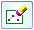
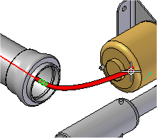
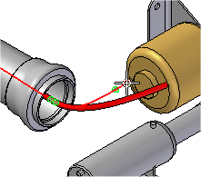
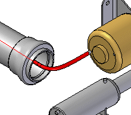
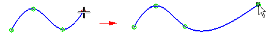
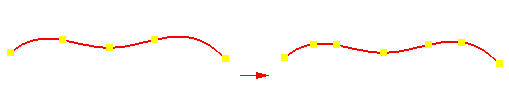
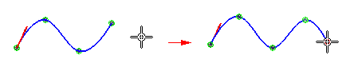
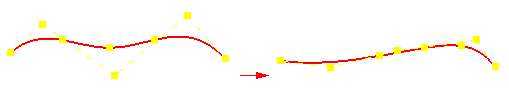
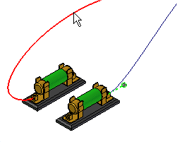
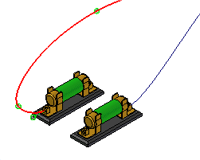

Edit the path of a electrical routing conductor
You can use the Edit Definition or Edit Path command to edit points along the path to easily control the routing of the path. For example, you can:
When you select a path and want to edit it, use Edit Definition command.
When you select a wire, cable, or bundle and want to edit the path, use Edit Path command.
Redefine a point in a path
After placing the second point of a path, the Redefine Point button on the Path command bar is activated where you can redefine any points that make up the path.
To redefine a point
-
Click the Redefine Point button

and then click the point you want to redefine.
-
Click the new point.

-
Click the Accept (checkmark) button to update the path to include the new point.

Move a point along a path
-
Right-click the path you want to edit.
-
On the shortcut menu, click Edit Definition.
-
Click a point, drag it to a new location, and then release the mouse button.

Insert a point in a path
You can add new points along a path or add a point in free space to add a new segment to the end of the path.
-
Right-click the path you want to edit.
-
On the shortcut menu, click Edit Definition.
-
On the Path command bar, click Select Points Step.
-
To add a point along a path, hold the Alt key and click the location along the path where you want to add the point.

-
To add a point to the end of the path, hold the Alt key and click a location in free space where you want to add the point.

Remove a point from a path
You can remove a point from a path.
-
Right-click the path you want to edit.
-
On the shortcut menu, click Edit Definition.
-
On the Path command bar, click Select Points Step.
-
Hold the Alt key and click the point you want to remove. When you remove edit points, the control vertex points move and the shape of the path changes.

If you remove the start or end point of a path, the path truncates to the next control on the path and the tangency of the next point remains the same.
Change focus between paths
You can change focus to another path without exiting the edit session.
-
Right-click the path you want to edit.
-
On the shortcut menu, click Edit Definition.
-
Click a second path.

The focus changes to the second path and it is ready to edit.

How do I
Route a harness entity along a surfaceConstruct a path through selected keypoints
Display Properties for a Harness Element
Create a wire
Create a cable
Create a wire harness bundle
Add a splice
Display Harness Elements
Create a harness component solid body
Delete a wire component solid body
Learn more
Creating the electrical routing manuallyCreating harness component solid bodies
Removing conductors
Look up more details
Path commandEdit Path Command
Path command bar
Route command
Route along Surface command
Route along Surface command bar
Show All Paths command
Wire command
Wire command bar
Show All Wires command
Hide All Wires command
Wire Properties Command
Cable command
Cable command bar
Show All Cables command
Hide All Cables command
Bundle command
Bundle command bar
Show All Bundles command
Hide All Bundles command
Splice command
Splice command bar
Splice Properties dialog box
Assign Terminals dialog box (Splice)
Create Physical Conductor command
Delete Physical Conductor command
Show Physical Conductor command
Show All Physical Conductors command
Hide Physical Conductor command
Hide All Physical Conductors command
Show All Harnesses command
Hide All Harnesses command
Remove command (Electrical Routing)
PathFinder in electrical routing
Related Topics
Create a bundle across a spliceAdd a wire to a splice
Remove a wire from a splice
Change the splice location
Change splice properties